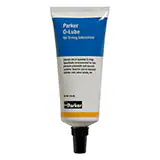

O-링 및 O-링 부속품

O-링 및 O-링 부속품
Parker O-링 부속품은 O-링 사용자를 지원하기 위해 설계되었으며, 어셈블리 그리스 및 윤활제, 사이징 콘(sizing cone) 및 어셈블리 도구를 포함합니다. O-링은 횡단면이 원형인 원형 실링 요소이며, 주로 고정(static) 응용 분야에서 사용됩니다. 크기는 내부 직경과 횡단면 직경으로 지정됩니다. Parker의 O-링은 AS 568B, DIN ISO 3601 및 JIS와 같은 미터법 및 영국식 국제 표준에 따라 제조되었습니다. 미니어처 O-링, 치수가 매우 큰 특수 O-링, 연속 성형 및 스플라이스 코드와 같은 거의 모든 치수의 맞춤 크기가 가능합니다. Parker는 FDA, USP, KTW, DVGW, BAM, WRAS(WRC), NSF, UL(Underwriters Laboratories), 항공 우주(AMS) 및 다양한 고객별 요구 사항을 포함하여 가장 엄격한 산업 표준을 충족하도록 제조된 O-링을 이용합니다.
■ O-링 부속품 상세 사양
 N0674-70 — O-링 Kit, 경도 70, 검정색, UL ListedParker NBR(Nitrile) O-ring 키트에는 37개의 유명한 AS568 크기와 총 513개의 O-ring이 포함되어 있습니다.
N0674-70 — O-링 Kit, 경도 70, 검정색, UL ListedParker NBR(Nitrile) O-ring 키트에는 37개의 유명한 AS568 크기와 총 513개의 O-ring이 포함되어 있습니다.
Parker NBR(Nitrile) O-ring 키트로, 37개의 유명한 AS568 크기와 총 513개의 O-ring이 포함된 일반 목적용 키트입니다.
| 내경 | Various | 폭 | Various |
|---|---|---|---|
| 중합체 재료 옵션 | Acrylonitrile-Butadiene Nitrile (NBR, XNBR) | 경도계 | 70 Shore A |
| 열적 활용 유형 | Standard (-30°F to 250°F) | 색상 | Black |
| 최저 작동 온도 | -30°F | 최고 작동 온도 | 250°F |
| 유체 유형용 | Oils | 업종 | General |
| 원산지 | North America | 내부적으로 윤활됨 | No |
| 충족된 사양 | UL, MIL/Aero, UL-Fire, UL-GasAlc, UL-MPSGas, UL-NatGas, UL-FuelOil, UL-HtdFuelOil, UL-Ammonia, UL-DryChem, MIL-G-21569B Class I 등 | ||
부품 번호가 없거나 씰 치수를 모르는 경우, 또는 OEM 장비에서 기존 부품 사용이 어려운 경우 정비 시간을 줄이기 위한 표준 O-ring 키트입니다. 다양한 표준 키트는 광범위한 씰링 용도에 맞는 O-ring 크기와 화합물 선택을 제공하며, 맞춤형 키트 제작도 가능합니다.
- 내열성: 최대 100°C(212°F), 수명 단축을 감안하면 121°C(250°F)까지 고려 가능
- 저온 유연성: 화합물에 따라 -34°C~-57°C(-30°F~-70°F)
- 내화학성: 지방족 탄화수소, 식물성·미네랄 오일 및 그리스, HFA/HFB/HFC 유압유, 낮은 온도의 산·알칼리·소금물, 물 등에 대응
- 일반 용도의 MIL-G-21569 CL 1 및 UL 등재 조건에 사용

범용 바륨그리스 윤활제, 탄화수소 서비스와 200psi 내의 공압시스템, 반투명 (O-Lube)Parker O-Lube는 탄화수소에 사용되는 씰과 함께 쓰도록 설계된 일반용 그리스 윤활제이며 공압 설비에도 사용할 수 있습니다.
Parker O-Lube는 일반용 그리스 윤활제로, 탄화수소에 사용되는 씰과 함께 사용되도록 설계되었으며 공압 설비에도 적용할 수 있습니다.
| 내경 | Various inch | 폭 | Various inch |
|---|---|---|---|
| 열적 활용 유형 | Low temperature (<-30°F) | 최저 작동 온도 | -20°F |
| 최고 작동 온도 | 180°F | 경도계 | n/a |
| 색상 | Translucent | 원산지 | North America |
| 유체 유형용 | - | 업종 | General |
| 중합체 재료 옵션 | - | 내부적으로 윤활됨 | - |
바륨 기반 석유 그리스로, 합성고무 씰의 조립성을 높이고 수명을 연장합니다. 내수성, 표면 부착력, 윤활 특성이 있으며 왕복·진동·저속 회전 운동의 저압 조건에 적합합니다. 권장 작동 온도는 -20°F~+180°F입니다.
- 내열성: 최대 82°C(180°F)
- 저온 가요성: 최대 -29°C(-20°F)
- 범용 조립 윤활제로 적합하며 표면 밀착성과 내수성이 좋음
- EPDM, FKM, fluorosilicone, HiFluor, HNBR, neoprene, nitrile, FFKM, polyacrylate, polysulfide, polyurethane 등과 호환 가능
- 실리콘, 부틸, 에틸렌 프로필렌 고무 씰 또는 미세 필터가 있는 시스템에는 권장하지 않음
 고점도 실리콘 윤활제, 일반 목적과 고압 공압, 반투명 (Super O-Lube)Super O-Lube는 고정성을 지닌 실리콘 오일로, 모든 고무 폴리머에 어셈블리 윤활제로 사용할 수 있습니다.
고점도 실리콘 윤활제, 일반 목적과 고압 공압, 반투명 (Super O-Lube)Super O-Lube는 고정성을 지닌 실리콘 오일로, 모든 고무 폴리머에 어셈블리 윤활제로 사용할 수 있습니다.
Super O-Lube는 고점도 실리콘 오일 계열의 다목적 어셈블리 윤활제로, 모든 고무 폴리머에 조립 윤활제로 사용할 수 있습니다.
| 내경 | Various inch | 폭 | Various inch |
|---|---|---|---|
| 열적 활용 유형 | 저·고온 (<-30°F, >250°F) | 최저 작동 온도 | -65°F |
| 최고 작동 온도 | 400°F | 경도계 | n/a |
| 색상 | 반투명 | 원산지 | 북미 |
| 업종 | 일반 | 충족된 사양 | - |
넓은 온도 범위에서 사용할 수 있는 불활성 실리콘 기반 윤활제로, 우수한 접착성과 고점도를 갖습니다. 고압 및 진공 애플리케이션에도 사용할 수 있으며 충전제가 없어 30마이크론 필터를 막지 않습니다. 대기 노출 시 노화에 민감한 고무 중합체 보호에도 도움이 됩니다.
- 내열성: 최대 204°C(400°F)
- 저온 유연성: 최저 -54°C(-65°F)
- 높은 점도, 높은 내습성, 노화 민감 중합체 보호
- EPDM, fluorocarbon, fluorosilicone, HiFluor, neoprene, nitrile, FFKM, polyacrylate, polysulfide, polyurethane, butadiene, butyl, ethylene propylene, polysulfone, SBR, silicone 등에 사용 가능
- 실리콘 고무에는 주의 필요. 300°F 초과 조건에서는 얇은 필름 또는 Super O-Lube 사용 권장
 N0552-90 — 나이트릴 90 경도계 O-링 키트, 검정색, 일반 목적Parker NBR O-ring 키트에는 37개의 인기 AS568 사이즈와 총 513개의 O-ring이 포함되어 있습니다.
N0552-90 — 나이트릴 90 경도계 O-링 키트, 검정색, 일반 목적Parker NBR O-ring 키트에는 37개의 인기 AS568 사이즈와 총 513개의 O-ring이 포함되어 있습니다.
Parker NBR O-ring 키트로, 37개의 인기 AS568 사이즈와 총 513개의 O-ring이 포함되어 있습니다.
| 최저 작동 온도 | -30°F | 최고 작동 온도 | 250°F |
|---|---|---|---|
| 경도계 | 90 Shore A | 원산지 | North America |
| 색상 | Black | 충족된 사양 | - |
부품 번호나 치수를 알 수 없을 때, 또는 OEM 부품을 바로 사용할 수 없을 때 유지보수 시간을 줄이기 위한 NBR 키트입니다. 여러 표준 키트 중 적용 조건에 맞는 화합물과 O-ring 크기를 선택할 수 있고, 200개 이상의 화합물을 이용한 맞춤 키트 제작도 가능합니다.
- 내열성 및 저온 신축성 제공
- 최고 100°C(212°F), 수명 감소를 감안하면 121°C(250°F)까지 고려 가능
- 화합물에 따라 -34°C~-57°C(-30°F~-70°F) 범위 적용
- 지방족 탄화수소, 식물성 유지, 광유, 그리스, HFA/HFB/HFC 유압 유체, 낮은 온도의 산·알칼리·소금물, 물 등에 적용
- 일반 목적, MIL-G-21569 CL 1, UL 등재 조건에 대응
 V0709-90 — 플루오르카본 90 경도계 O-링 키트, 검정색, 일반 목적고온 조건에 대응하는 플루오르카본 계열 O-ring 키트로, 37개의 인기 AS568 사이즈와 총 513개의 O-ring이 포함되어 있습니다.
V0709-90 — 플루오르카본 90 경도계 O-링 키트, 검정색, 일반 목적고온 조건에 대응하는 플루오르카본 계열 O-ring 키트로, 37개의 인기 AS568 사이즈와 총 513개의 O-ring이 포함되어 있습니다.
고온 조건에 대응하는 플루오르카본 계열 O-ring 키트입니다. Parker의 키트에는 37개의 인기 AS568 사이즈와 총 513개의 O-ring이 포함되어 있습니다.
| 최저 작동 온도 | -15°F | 최고 작동 온도 | 400°F |
|---|---|---|---|
| 열 적용 | High Temperature (260°F to 400°F) | 경도계 | 90 Shore A |
| 색상 | Black | 유체 호환성 | Oils |
| 원산지 | North America | 인증서 | None |
OEM 교체 부품과 동일한 비용 수준으로 다양한 씰링 솔루션을 적용할 수 있도록 구성된 플루오르카본 키트입니다. 고온 조건과 오일계 유체에 대응하며, 다양한 표준 키트 또는 맞춤형 키트 제작에 활용할 수 있습니다.
- 고온 적용: 260°F~400°F
- 내열성, 저온 신축성, 내화학성 제공
- 미네랄 오일 및 그리스, ASTM 오일, 식물성 기름, 지방족·방향족·염화 탄화수소 등과 호환
- 글리콜 기반 브레이크액, 암모니아 가스, 아민, 알칼리, 과열 증기, 저분자량 유기산에는 권장하지 않음
 General Purpose Barium Lubricant, for installation of elastomer seals, translucent (O-Lube, Europe)Parker O-Lube는 고무 씰 조립성을 높이고 수명을 연장하는 범용 윤활제로, NBR, HNBR, TPU, FKM, FFKM 씰에 사용할 수 있습니다.
General Purpose Barium Lubricant, for installation of elastomer seals, translucent (O-Lube, Europe)Parker O-Lube는 고무 씰 조립성을 높이고 수명을 연장하는 범용 윤활제로, NBR, HNBR, TPU, FKM, FFKM 씰에 사용할 수 있습니다.
Parker O-Lube Europe 제품은 고무 씰 조립성을 높이고 씰 수명을 연장하는 범용 윤활제입니다. NBR, HNBR, TPU, FKM, FFKM 씰 및 공압 애플리케이션에 사용할 수 있습니다.
| 작동 온도 | -30 to 120°C | 패키지 유형 | Tube |
|---|---|---|---|
| 크기 | 57 g | 색상 | Translucent |
| 업종 | General Industrial | 사업부 | Prädifa Technology Division |
바륨 비누를 함유한 광유 기반 윤활제로, 씰과 작동면에 함께 처리했을 때 조립성과 윤활 특성이 좋아집니다. 표면 부착성과 내수성이 있으며 저압, 저속의 왕복·진동·회전 운동에 특히 적합합니다.
미네랄 오일과 호환되지 않는 부틸, 에틸렌 프로필렌 계열 씰이나 마이크로 필터가 있는 시스템에는 권장하지 않습니다.
 High viscosity silicone lubricant, for installation of elastomer seals, translucent (Super O-Lube, Europe)Parker Super O-Lube는 고점도 실리콘 오일 윤활제로, EPDM, VMQ, FKM, FFKM 씰의 조립 윤활에 사용할 수 있습니다.
High viscosity silicone lubricant, for installation of elastomer seals, translucent (Super O-Lube, Europe)Parker Super O-Lube는 고점도 실리콘 오일 윤활제로, EPDM, VMQ, FKM, FFKM 씰의 조립 윤활에 사용할 수 있습니다.
Parker Super O-Lube Europe 제품은 EPDM, VMQ, FKM, FFKM 씰용 조립 윤활제로 사용할 수 있는 고점도 실리콘 윤활제입니다.
| 작동 온도 | -55 to 200°C | 패키지 유형 | Tube |
|---|---|---|---|
| 크기 | 57 g | 색상 | Translucent |
| 업종 | General Industrial | 사업부 | Prädifa Technology Division |
| 브랜드 | Prädifa | 기술 데이터 | Silicone grease, solidifying point -33°C, flashpoint +321°C |
금속과 고무 부품 모두에 잘 달라붙는 접착 특성이 있고 넓은 온도 범위에서 작동합니다. 얇은 필름으로 도포했을 때 결과가 좋으며, 불활성이어서 다양한 매체에 적합합니다. 고압 및 진공 애플리케이션에도 사용할 수 있고, 30µm 마이크로필터를 막지 않습니다.
권장 온도 범위는 -55°C~+200°C입니다.
 V0884-75 — Fluorocarbon, 경도 75 O-링 Kit, 범용, BrownParker 플루오르카본(FKM, FPM) O-ring 키트에는 37개의 유명한 AS568 크기와 총 513개의 O-ring이 포함되어 있습니다.
V0884-75 — Fluorocarbon, 경도 75 O-링 Kit, 범용, BrownParker 플루오르카본(FKM, FPM) O-ring 키트에는 37개의 유명한 AS568 크기와 총 513개의 O-ring이 포함되어 있습니다.
Parker Fluorocarbon O-ring 키트로, 부품 번호가 누락되거나 씰 치수를 모르는 경우 정비 시간을 줄이고 다양한 씰링 조건에 대응할 수 있는 범용 키트입니다.
| 내경 | Various | 폭 | Various |
|---|---|---|---|
| 중합체 재료 옵션 | Fluorocarbon (FKM, FPM) | 경도계 | 75 Shore A |
| 열적 활용 유형 | High temperature (260°F-400°F) | 색상 | Brown |
| 최저 작동 온도 | -15°F | 최고 작동 온도 | 400°F |
| 유체 유형용 | Oils | 업종 | General |
| 원산지 | North America | 내부적으로 윤활됨 | No |
| 충족된 사양 | UL, UL-Gas, UL-GasAlc, UL-ApKer, UL-FuelOil 등 | ||
8가지가 넘는 표준 키트는 광범위한 씰링 애플리케이션을 위한 O-ring 크기와 화합물 선택을 제공합니다. 여러 OEM 교체 조건에 활용할 수 있고, 사용자 정의 키트 제작도 가능합니다.
- 내열성: 최대 204°C(400°F)
- 저온 유연성: 최저 -26°C(-15°F), 일부 화합물은 -46°C(-50°F)까지 고려 가능
- 미네랄 오일 및 그리스, ASTM 오일, 실리콘유와 그리스, 지방족·방향족 탄화수소 등에 대응
- 글리콜 기반 브레이크액, 암모니아 가스, 아민, 알칼리, 과열 증기, 저분자량 유기산에는 권장하지 않음